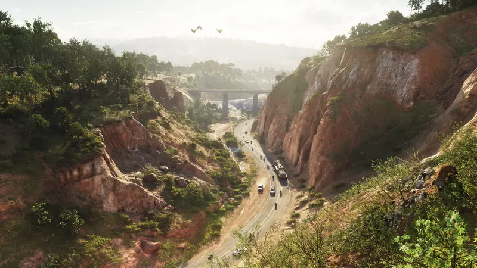

When is GTA 6 coming to PC?
Short answer
There's no date or announcement. Take-Two has only said the game is announced for consoles and that its big titles tend to reach every platform eventually.

What Take-Two has said
In May 2026, Strauss Zelnick explained that Rockstar had only announced GTA 6 for consoles. He also said PC is a big market and that most of the company's hits end up on all platforms over time.
What the launch announcements say
Take-Two's November 19, 2026 release and Rockstar's Newswire both announce the game for PlayStation 5 and Xbox Series X|S only, with no mention of PC.
Precedent
- GTA IV: reached PC about seven months after consoles (April and December 2008).
- GTA V: about 19 months later.
- Red Dead Redemption 2: October 2018 on consoles, PC on November 5, 2019, about a year later.
That isn't a prediction, just how Rockstar has handled it before.
Watch out for scams
There is no PC version. Any download claiming otherwise is fake and may contain malware.
Change log
Nov 20, 2026: added Take-Two's official availability release, which names only PS5 and Xbox Series X|S. Nov 19, 2026: the game launches on PS5 and Xbox Series only.
Meanwhile, see which console runs it best.
Sources
- Take-Two: Rockstar Games announces Grand Theft Auto VI is now available (Nov 19, 2026)
- Rockstar Newswire: Grand Theft Auto VI Now Available (Nov 19, 2026)
- Wccftech: Take-Two holds the date; Zelnick on PC
- Digital Citizen: Take-Two stays quiet on a PC version
- GameSpot: Red Dead Redemption 2 is coming to PC
Written by Six Stars from the sources above, checked on November 20, 2026. Spot a mistake? Tell us via About us.